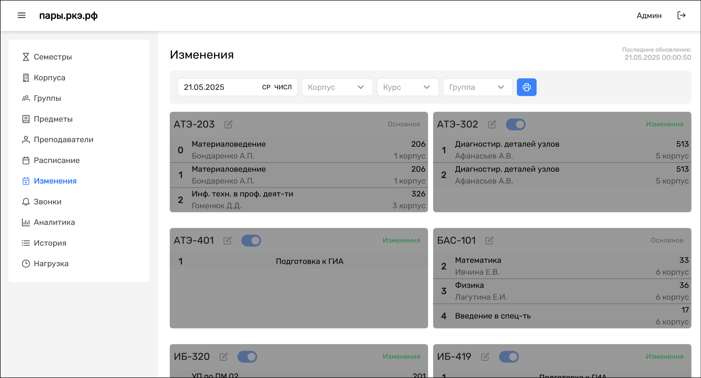
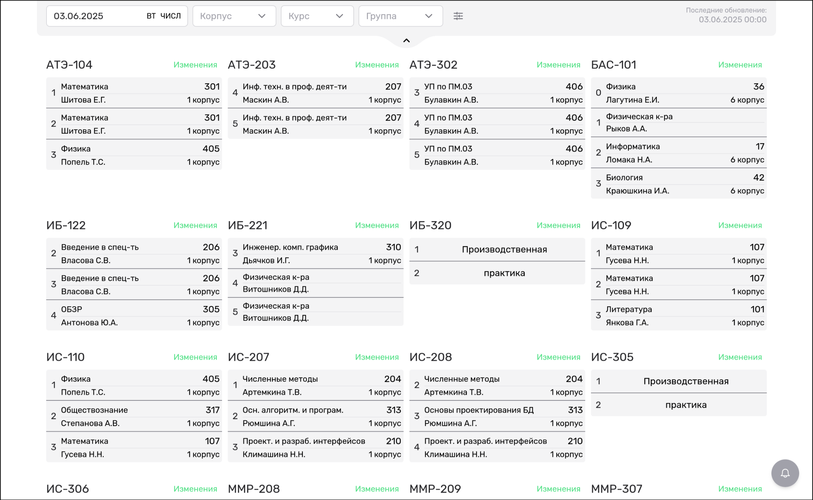
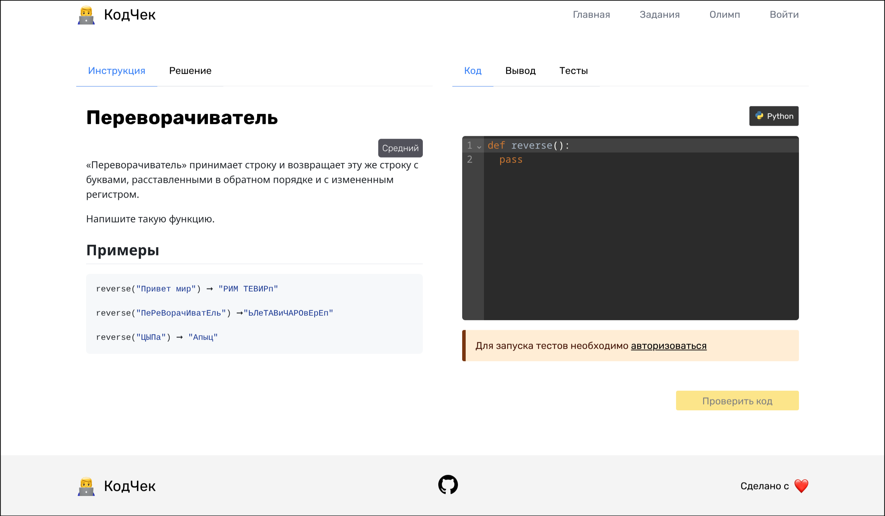
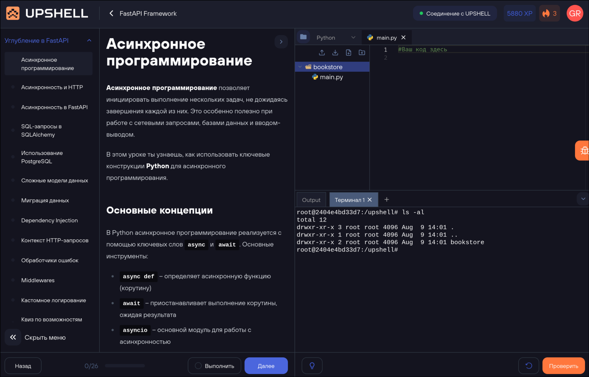
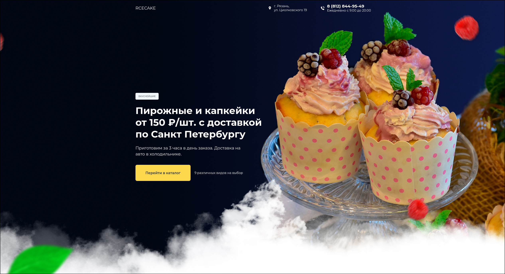
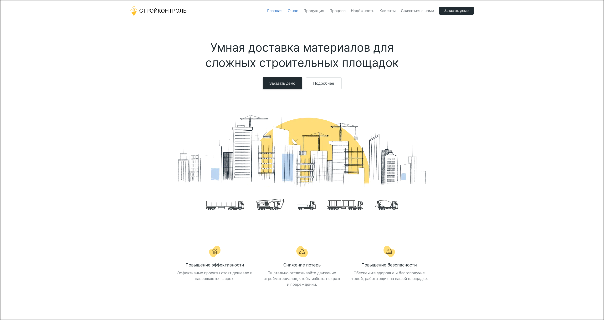

Ivan Kotov / GreenBabyBorn
FullStack Web Developer from Ryazan, Russia GMT+3Tech stack
- HTML
- CSS
- JavaScript
- TypeScript
- PHP
- Node.js
- Vue
- Nuxt
- NestJS
- Express.js
- GrammyJs
- Telegram Mini Apps
- $mol
- React
- NextJs
- Vitest/Jest
- Playwright
- Storybook
- Laravel
- PostgreSQL
- MongoDB
- Git
- Docker
- AWS (basics)
- RESTful APIs
- Websocket (Socket.IO)
- Tailwind CSS
- Keycloak
- OAuth 2.0
- Kafka
- OpenRouter
About me
Работаю с 2020 года создаю высокопроизводительные и масштабируемые веб-приложения. Специализируюсь на разработке фронтенд и бэкенд-решений, используя современные технологии и лучшие практики, от идеи до MVP. Реализовывал проекты для образовательных учреждений и стартапов, оптимизировал процессы и внедрял инновационные решения, обеспечивающие удобство пользователей и достижение бизнес-целей. Работа в команде, code review.
Есть профильное образование, по специальности "Информационные системы и программирование", квалификация "Разработчик веб и мультимедийных приложений".
Projects
-
Платформа для управления расписанием занятий
(пары.ркэ.рф, 2023)
Спроектировал и разработал с нуля веб-платформу для автоматизации расписания занятий в колледже. Реализовал административную панель для управления данными и интегрировал REST API для чат-ботов Telegram и VK, обеспечив удобный доступ для 500+ пользователей.
Технологии: Laravel, Vue 3, PostgreSQL, Docker
Результат: Платформа внедрена в образовательный процесс, сократив время обработки расписания на 40% и повысив удобство для студентов и преподавателей. 3000+ пользователей в день.  -
Обновление серверной инфраструктуры для чемпионатов (2024)
Разработал и внедрил серверный образ для чемпионатов по компетенции «Веб-технологии», обеспечив изолированные среды для участников. Настроил стабильную и безопасную инфраструктуру для 50+ участников.
Технологии: Docker, Linux, Nginx, MySQL
Результат: Надежная инфраструктура получила высокую оценку организаторов, обеспечив бесперебойное проведение соревнований. -
Сервис для решения алгоритмических задач
(кодчек.ркэ.рф, 2024)
Создал с нуля веб-сервис для студентов колледжа, предоставляющий платформу для решения алгоритмических задач с автоматической проверкой. Разработал интуитивный интерфейс и функционал оценки решений.
Технологии: Nuxt 3, Pinia, PostgreSQL, Prisma ORM, Docker
Результат: Увеличил вовлеченность студентов в изучение IT на 30%, способствуя их профессиональному развитию. -
Интерактивный тренажер для образовательной
платформы (upshell.io, 2025)
Разработал интерактивный тренажер с live-терминалом и виртуальной файловой системой для обучения в реальном времени. Реализовал масштабируемую архитектуру и интеграцию с системами аутентификации.
Технологии: NestJS, Next.js, Redux Toolkit, WebSocket, Keycloak, Docker, Nginx
Результат: Создан инструмент, используемый 1000+ студентами, повысивший эффективность обучения и практические навыки. -
CupCake - лендинг кондитерской
Адаптивный, кроссбраузерный лендинг для кондитерской
 -
Стройконтроль - лендинг строительной компании
Адаптивный, кроссбраузерный лендинг для строительной компании

Diploms and certificates